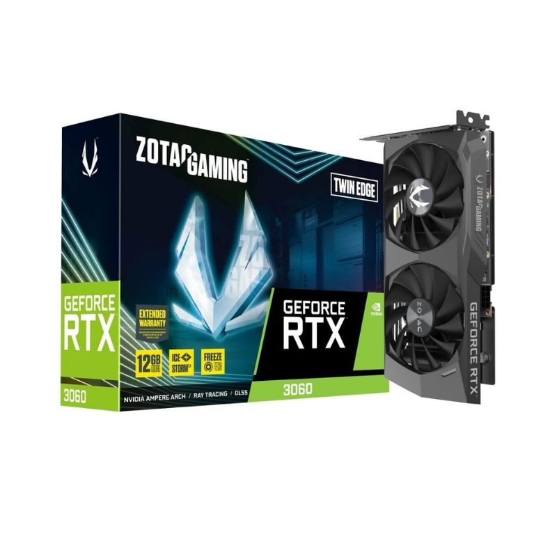
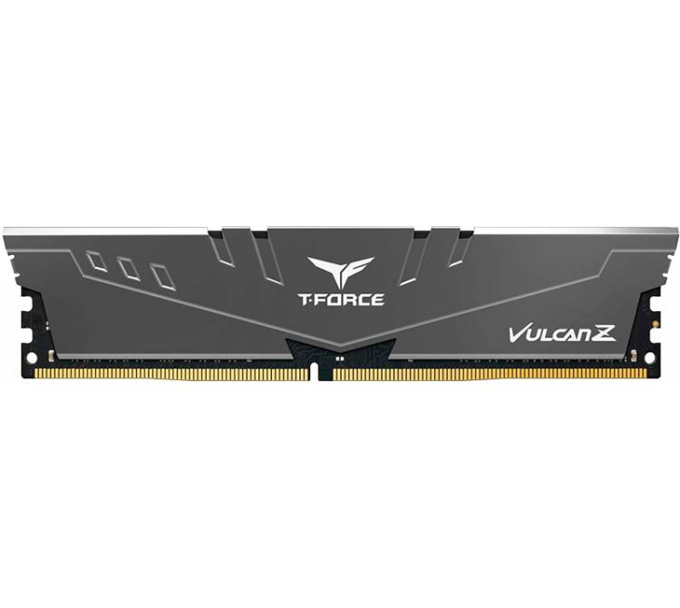
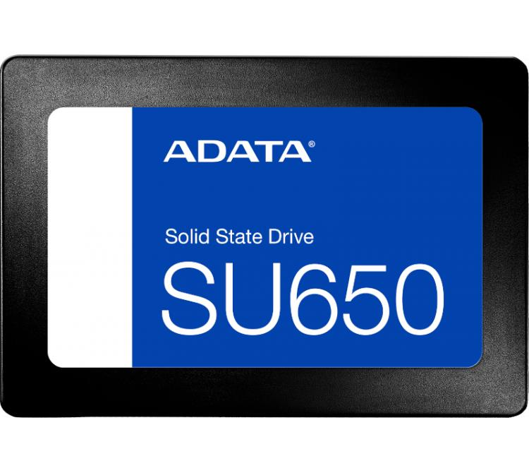
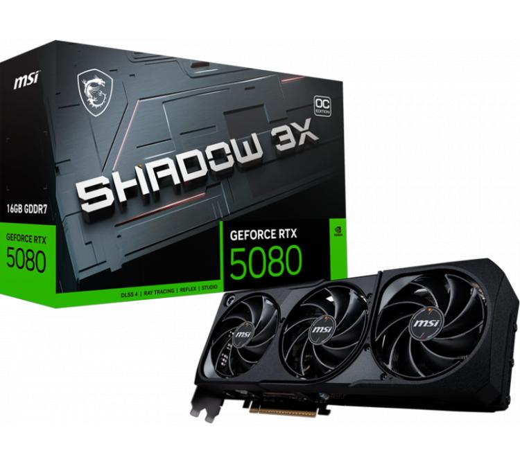
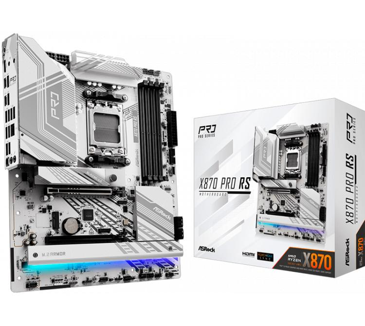
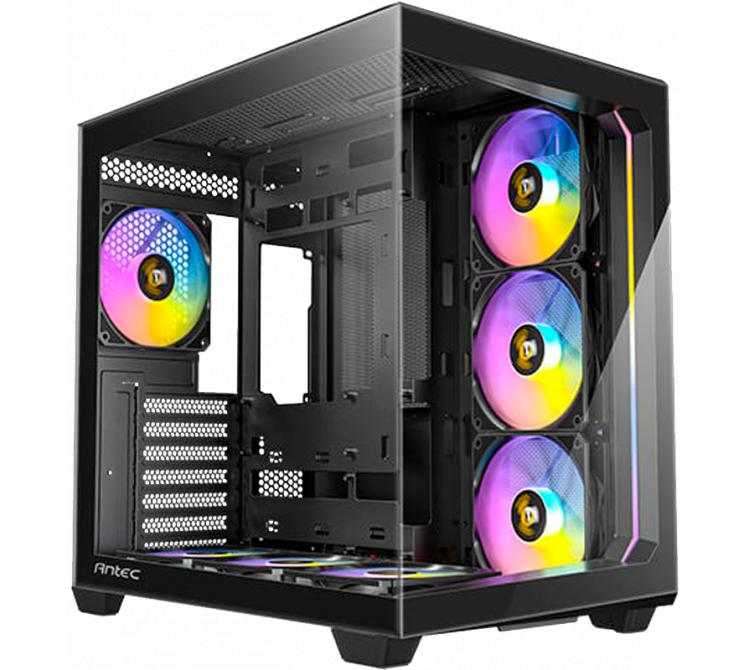
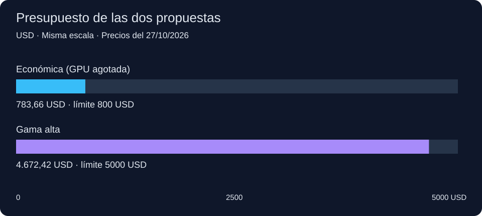
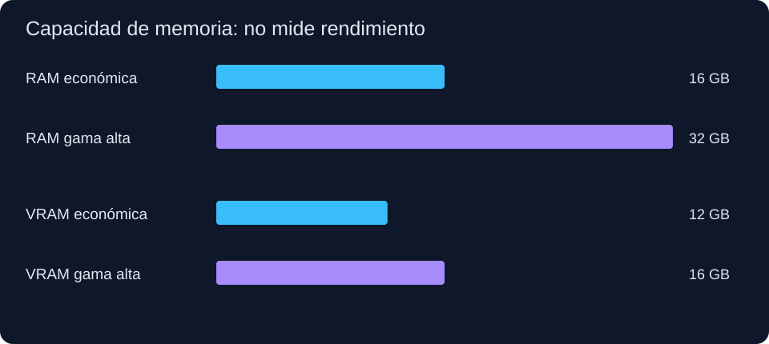
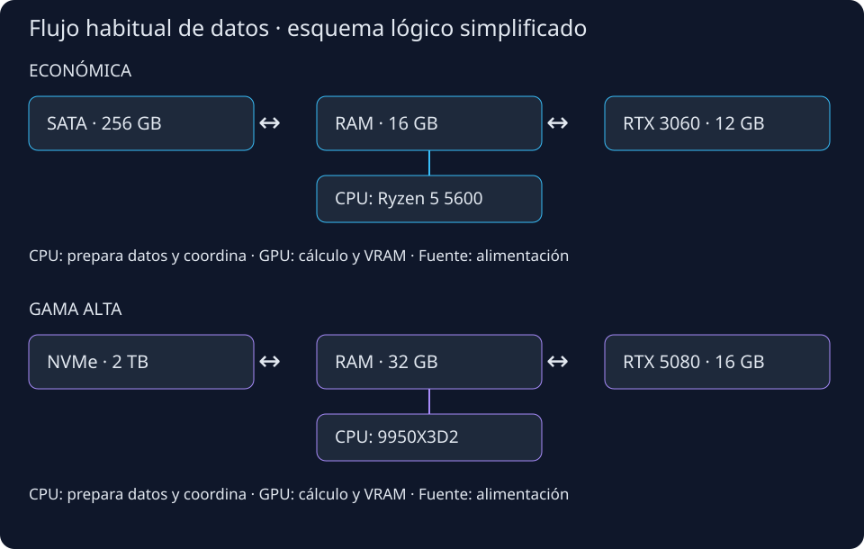

3.1. Criterios y presupuesto
El perfil elegido es investigador en alineación y seguridad de IA. En casa puedo preparar preguntas, ejecutar modelos pequeños, buscar errores y analizar respuestas. No necesito un servidor industrial para comenzar.
La propuesta tiene exactamente dos equipos: uno económico de hasta 800 USD y otro doméstico de gama alta, con un objetivo de 3000–5000 USD. El segundo intervalo es un criterio de esta propuesta; no lo presento como un límite escrito por el profesor.
Fecha de precios: 27/10/2026. Uso precios finales publicados en Argentina al contado o por transferencia, no precios sin impuestos ni cuotas. La conversión es ARS ÷ 1560, según dólar billete venta del Banco Nación. [32] Para Compra Gamer uso el campo público precioEspecial y el estado del catálogo. [64]
Incluyo torre, fuente, ventiladores y refrigeración de CPU. Excluyo transporte y logística por el alcance del trabajo. Reutilizo monitor, teclado, ratón y conexión Ethernet ya disponibles; utilizo Linux sin licencia de pago y montaje propio. No incluyo un SAI ni un disco externo: las copias de seguridad requieren un recurso adicional. No presento estos totales como el precio de un puesto completo desde cero.
3.2. Configuración económica: hasta 800 USD
Compra condicionada. La RTX 3060 de referencia figura agotada. El total cumple el límite como cálculo, pero todavía no demuestra que hoy pueda comprarse toda la configuración. Es necesario encontrar la misma tarjeta usada dentro del precio máximo indicado abajo, con estado y garantía comprobables.



| Componente | Modelo | Cant. | ARS/unidad | ARS subtotal | USD subtotal | Estado y precio |
|---|---|---|---|---|---|---|
| CPU | AMD Ryzen 5 5600 BOX + Wraith Stealth [39] | 1 | 254.999,00 | 254.999,00 | 163,46 | Nuevo; disponible [B1] |
| GPU | Zotac RTX 3060 Twin Edge 12 GB [60] | 1 | 447.000,00 | 447.000,00 | 286,54 | Outlet/usada; AGOTADO [B2] |
| Placa madre | Gigabyte A520M K V2 [35] | 1 | 88.711,06 | 88.711,06 | 56,87 | Nueva; disponible [B3] |
| RAM | Team VULCAN Z 8 GB DDR4-3200 CL16 (TLZGD48G3200HC16F01) [61] | 2 | 119.168,00 | 238.336,00 | 152,78 | Nueva; disponible [B4] |
| SSD | ADATA SU650SS 256 GB SATA, ASU650SS-256GT [62] | 1 | 64.050,00 | 64.050,00 | 41,06 | Nuevo; disponible [B5] |
| Fuente | Antec CSK650DC AR 650 W Bronze [63] | 1 | 74.759,00 | 74.759,00 | 47,92 | Nueva; revisar revisión exacta [B6] |
| Gabinete | Zer01 Orion ATX, 4 ventiladores | 1 | 54.657,91 | 54.657,91 | 35,04 | Nuevo; disponible [B7] |
| TOTAL | Componentes completos | — | — | 1.222.512,97 | 783,66 | Límite: 800 USD |
Margen hasta 800 USD: 25.487,03 ARS / 16,34 USD. Los totales se calculan en ARS sin redondear cada conversión.
Con los demás precios iguales, el máximo disponible para la GPU es 472.487,03 ARS. Cualquier gasto adicional de montaje o accesorios reduce ese máximo. No utilizo la posible excepción de 100 USD mencionada en la conversación.
Por qué elijo estos componentes
La RTX 3060 de 12 GB conserva espacio para modelos cuantizados pequeños. No la confundo con la versión de 8 GB. Sus 12 GB representan un 50 % más de capacidad que 8 GB; no el doble. La compra usada reduce el coste, pero exige comprobar temperaturas, errores de memoria, ventiladores, número de serie y condiciones de devolución.
El Ryzen 5 5600 ofrece 6 núcleos y 12 hilos para preparar datos y ejecutar scripts. La versión BOX incluye Wraith Stealth. Los 16 GB de RAM son un punto de partida: conviene cerrar programas y ejecutar una prueba a la vez. Dos módulos de 8 GB permiten doble canal; deben ser del mismo SKU, aunque dos módulos sueltos no equivalen a un kit validado conjuntamente.
El SSD SATA de 256 GB es un compromiso deliberado para respetar 800 USD. Basta para el sistema y una selección pequeña de modelos, pero obliga a borrar archivos o ampliar el almacenamiento. La capacidad utilizable es menor que 256 GB y el sistema ocupa parte del espacio. Un NVMe más grande sería una mejora futura, fuera del precio actual.
3.3. Gama alta doméstica: objetivo 3000–5000 USD
| Componente | Modelo | Cant. | ARS/unidad | ARS subtotal | USD subtotal | Estado y precio |
|---|---|---|---|---|---|---|
| CPU | AMD Ryzen 9 9950X3D2 Dual Edition [50] | 1 | 1.645.280,00 | 1.645.280,00 | 1.054,67 | Nuevo; disponible en 24–48 h [A1] |
| GPU | MSI RTX 5080 16G SHADOW 3X OC [52] | 1 | 3.180.400,00 | 3.180.400,00 | 2.038,72 | Nueva; disponible [A2] |
| Placa madre | ASRock X870 Pro RS (sin Wi-Fi) [53] | 1 | 337.923,00 | 337.923,00 | 216,62 | Nueva; disponible [A3] |
| RAM | Corsair Vengeance 32 GB (2×16), DDR5-6000 CL36; CMK32GX5M2E6000Z36 [55] | 1 | 955.300,00 | 955.300,00 | 612,37 | Nueva; disponible [A4] |
| SSD | ADATA LEGEND 900 PRO 2 TB, SLEG-900P-2TCS [56] | 1 | 658.450,00 | 658.450,00 | 422,08 | Nuevo; disponible [A5] |
| Refrigeración | DeepCool LE720 360 ARGB Black [57] | 1 | 120.150,00 | 120.150,00 | 77,02 | Nueva; disponible [A6] |
| Fuente | XPG CORE REACTOR II VE 850 W Gold, ATX 3.1 [59] | 1 | 192.626,75 | 192.626,75 | 123,48 | Nueva; disponible [A7] |
| Gabinete | Antec C5 ARGB Black, 7 ventiladores [58] | 1 | 198.850,00 | 198.850,00 | 127,47 | Nuevo; disponible [A8] |
| TOTAL | Componentes completos | — | — | 7.288.979,75 | 4.672,42 | Límite: 5000 USD |



Margen hasta 5000 USD: 511.020,25 ARS / 327,58 USD. Los totales se calculan en ARS sin redondear cada conversión.
Qué significa «actual en 2026»
El Ryzen 9 9950X3D2 Dual Edition fue presentado en abril de 2026. La RTX 5080 pertenece a la generación Blackwell de 2025 y sigue siendo una opción moderna para esta comparación. No afirmo que todos los componentes se hayan lanzado en 2026. [50] [51] [52]
Lógica de la elección
El procesador de 16 núcleos y 32 hilos aporta recursos para preparar datos, compilar y organizar varias tareas. La GPU de 16 GB ofrece más memoria y una arquitectura más reciente. Sin embargo, frente a 12 GB la diferencia de capacidad es solo del 33,3 %. El precio mucho mayor no permite prometer modelos cuatro veces más grandes ni una velocidad fija.
El 9950X3D2 es una elección de gama alta para estudiar una novedad de 2026. No demuestro que su caché adicional sea la mejor inversión para todas las tareas de IA. Si el objetivo principal fuera ejecutar modelos más grandes, convendría comparar otras distribuciones del presupuesto con más VRAM o RAM. La caché de CPU no sustituye ninguna de estas memorias.
Elijo 32 GB de RAM y un SSD NVMe de 2 TB para mantener la propuesta por debajo de 5000 USD con los precios locales consultados. Esto permite guardar más modelos y resultados, pero 32 GB siguen siendo una limitación para muchas máquinas virtuales o modelos grandes. La refrigeración líquida está incluida porque este procesador no trae cooler. No uso overclock manual.
3.4. Comparación técnica
| Aspecto | Económica | Gama alta |
|---|---|---|
| CPU | Ryzen 5 5600: Zen 3; 6/12; 3,5 GHz base / hasta 4,4 GHz; L3 32 MB; TDP 65 W; AM4; sin gráfica integrada. [39] | 9950X3D2: Zen 5; 16/32; 4,3 GHz base / hasta 5,6 GHz; L3 192 MB y L2 16 MB; TDP 200 W; AM5; Radeon integrada básica. [50] |
| GPU | 3584 CUDA; 12 GB GDDR6; 192 bits; 15 Gb/s; 170 W; PCIe 4.0 x16. [60] | 10752 CUDA; 16 GB GDDR7; 256 bits; 30 Gb/s; 360 W; PCIe 5.0. [52] |
| RAM | 16 GB DDR4; perfil 3200 MT/s CL16; dos módulos. [61] | 32 GB DDR5; perfil EXPO 6000 MT/s CL36; kit 2×16. [55] |
| SSD | 256 GB SATA de 2,5 pulgadas. [62] | 2 TB, M.2 2280, PCIe 4.0 x4 NVMe. [56] |
| Uso principal | Aprender, preparar prompts y comparar modelos pequeños, uno a la vez. | Más tareas en paralelo y más espacio para modelos y resultados; límites domésticos. |
Los GHz máximos no son frecuencias garantizadas en todos los núcleos. El TDP no es el consumo total del equipo en el enchufe. Tampoco comparo los núcleos CUDA de generaciones diferentes como si cada núcleo hiciera exactamente el mismo trabajo.
3.5. Compatibilidad y puntos pendientes
| Área | Económica | Gama alta |
|---|---|---|
| Plataforma | AM4 + A520 + DDR4. Verificar revisión y BIOS para Ryzen 5600 en la lista de Gigabyte. [35] | AM5 + X870 + DDR5. ASRock indica BIOS 4.03 para 9950X3D2; actualizar antes de instalar si corresponde. [54] |
| GPU y ranuras | La RTX 3060 funciona en el PCIe 3.0 x16 de esta A520. El enlace queda en Gen3. Monitor conectado a la GPU, no a la placa madre. | Instalar la RTX 5080 en PCIE1. SSD en M.2 compatible PCIe 4.0 x4, respetando el manual y las líneas compartidas. [53] |
| RAM | Dos ranuras ocupadas; ampliar a 32 GB implica sustituir módulos. 3200 MT/s requiere configurar y probar el perfil. | Usar A2/B2 y comprobar QVL. 6000 MT/s es un perfil EXPO de overclock, no la velocidad JEDEC garantizada del CPU. Probar estabilidad y reducir frecuencia si hace falta. |
| Energía | 24 pines ATX, EPS CPU y PCIe 6+2 para GPU; SATA para SSD. Zotac recomienda 600 W; se proponen 650 W. [60] [63] | 24 pines ATX, EPS para CPU y cable nativo 12V-2x6 a GPU. MSI recomienda 850 W; fuente de 850 W propuesta. Insertar completamente el conector y respetar el radio de curvatura. [52] [59] |
| Refrigeración y espacio | Wraith Stealth incluido en BOX. La GPU mide 224,1 × 116,3 × 39,2 mm según Zotac. El vendedor debe confirmar espacio interno y conectores de los ventiladores del Orion; no se encontró manual oficial suficiente para certificar ese punto. | C5 admite ATX y radiador superior de 360 mm; GPU de 303 mm frente a límite de 410 mm. LE720: radiador de 402 × 120 × 27 mm y ventiladores de 25 mm. Revisar holgura real con RAM y cables antes del montaje. [57] [58] |
| Almacenamiento | SSD SATA: cable de datos a placa y alimentación SATA de fuente. Comprobar cable incluido en la caja de la placa. | SSD M.2: no utiliza cable SATA de datos ni de alimentación. Usar un disipador adecuado sin superponer dos. |
Discrepancia de la fuente económica: Compra Gamer anuncia CSK650DC AR como ATX 3.1, pero Antec documenta CSK650DC como ATX 12V 2.52. No afirmo que la variante AR sea ATX 3.1. Antes de comprar hay que confirmar etiqueta, revisión y conectores; para la RTX 3060 no es necesario un conector de 16 pines. [B6] [63]
La compatibilidad se revisó a nivel documental. No se montaron ni se probaron estos equipos. La QVL exacta de ambos conjuntos de memoria y el interior del gabinete económico quedan pendientes.
3.6. Gráficos y esquemas



3.7. Qué tareas propongo y qué mediría
Comenzaría con un modelo de 3B o 7–8B cuantizado a 4 bits, un contexto corto y una pregunta a la vez. Es un punto de partida para una prueba, no una garantía de compatibilidad con cualquier modelo. Para 8B, los pesos a 4 bits ocupan aproximadamente 8 × 10⁹ × 4 / 8 = 4 GB decimales. El programa necesita memoria adicional para el contexto, buffers y otros datos.
Un modelo denso de 70B a 4 bits necesita alrededor de 35 GB solo para pesos. No cabe completamente en ninguna GPU propuesta. La descarga parcial a RAM tampoco convierte estos equipos en estaciones cómodas para ese caso. No propongo entrenar un LLM grande desde cero.
Para comparar de forma justa usaría el mismo archivo de modelo, cuantización, versión de software, lista de preguntas y contexto. Registraría tiempo de carga, tokens/s, latencia, memoria máxima y consumo en el enchufe. Repetiría cada prueba y separaría la primera carga de las siguientes. No invento cifras para completar una tabla.
Para estudiar seguridad, revisaría manualmente las respuestas de garak y limitaría los permisos del entorno. Una GPU más rápida no garantiza respuestas correctas ni elimina los riesgos de ejecutar código o modelos descargados.